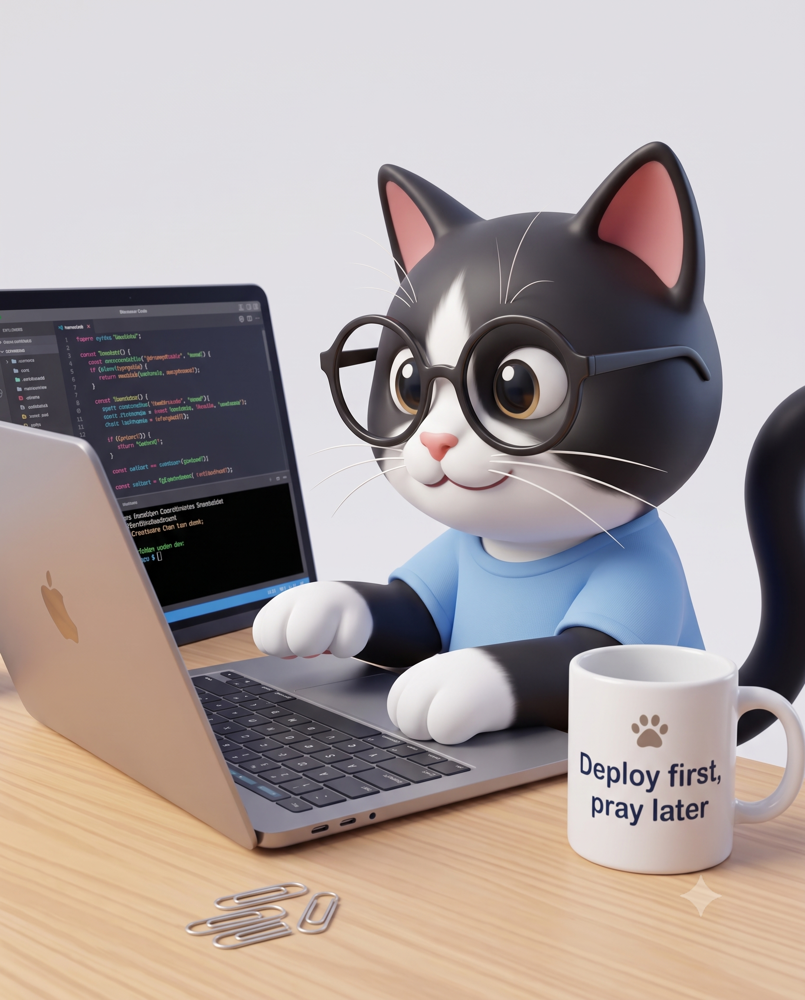

Backend & Architecture
Python, RESTful API 구축, 자료구조(Tree 등) 활용 및 성능 최적화.
01 / ABOUT

안녕하세요. 보이지 않는 곳을 튼튼하게 짓는 개발자가 되기 위해 걸어온 Suz입니다.
기획 의도를 파악하고, 이를 구현하기 위해 데이터베이스를 설계하거나 API를 연동하는 과정을 즐깁니다
cProfile 같은 툴로 성능을 측정하고 최적화하는 것, 클라우드 네이티브 환경(AWS, Docker)과 AI 모델(LLM, RAG)을 서비스에 녹여내는 인프라 구축에 관심이 많습니다.
02 / SKILLS
Python, RESTful API 구축, 자료구조(Tree 등) 활용 및 성능 최적화.
LangChain과 Vector DB를 활용한 RAG 파이프라인 설계부터, MediaPipe, YOLO 등 컴퓨터 비전 모델을 실제 서비스에 연동하는 과정을 다룹니다.
AWS EC2와 Docker를 활용한 인프라 환경 구성을 경험했으며, 비즈니스 기획과 아키텍처를 꼼꼼히 문서화하여 팀원들과 명확하게 소통합니다.
03 / PROJECTS
GitHub에서 공개 저장소를 실시간으로 불러옵니다.
언어별로 골라 살펴보세요.
04 / CONTACT
프로젝트 협업, 커피챗, 혹은 가벼운 인사도 좋습니다. 메시지를 남겨주시면 확인 후 답변드릴게요.
balsamncedar5@gmail.com